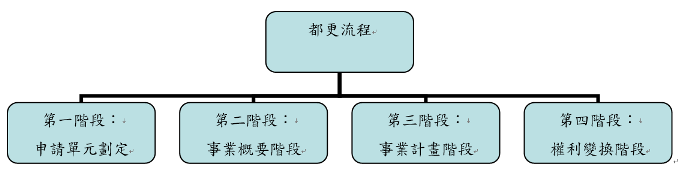

白話都更
白話都更（四）都更流程—事業概要階段 文：戴家旭律師
◎事業概要階段目的
在都更第二階段—事業概要階段，目的在於透過事業概要的擬定以確定都市更新單元的範圍、未來發展方向與原則，並釐清法令適用疑義與獎助額度等不確定的事項，以提高更新事業計畫執行的可行性。事業概要為事業計畫的摘要性說明，如能獲得主管機關核准，則擬定事業概要的實施者將可延續事業概要的原則繼續發展。
◎事業概要階段同意門檻
都更事業概要階段同意門檻，需具備以下二個條件（都更條例第10條第2項）：
一、 更新單元範圍內私有土地及私有合法建築物所有權人均超過十分之一。（土地及建物所有權人超過十分之一）
二、 其所有土地總面積及合法建築物總樓地板面積均超過十分之一。（土地及建物面積超過十分之一）
簡單的說，就是權利人及面積均超過十分之一，即可申請核定都更事業概要。舉例而言，星星大廈為十層樓的建物，一樓到十樓建物所有權人共十人，分別為：甲、乙、丙、丁、戊、己、庚、辛、壬、癸，各有應有部分十分之一。倘只有甲一人要擬具都更事業概要，則不符門檻（未超過十分之一）。但只要甲，找好朋友乙一起擬具都更事業概要，則符合都更條例第10條第2項之門檻：土地及建物所有權人超過十分之一，及土地及建物樓地板面積超過十分之一。
但依都更條例第12條之規定，應不予算入人數與所有權比例者包括：
（一） 依法應予保存之古蹟及聚落。
（二） 經協議保留，並經直轄市、縣（市）主管機關核准且登記有案之宗祠、寺廟、教堂。
（三） 經政府代管或依土地法第七十三條之一規定由地政機關列冊管理者。
（四） 經法院囑託查封、假扣押、假處分或破產登記者。
（五） 祭祀公業土地。但超過三分之一派下員反對參加都市更新時，應予計算。
例外情形，是同意比例倘已達都更條例第22條者，得免擬具都更事業概要，依同法依第15條及第19條規定，逕行擬具都市更新事業計畫辦理。
另外需特別注意者，是大法官解釋釋字第709號，認為僅權利人及面積超過十分之一，即得申請核定都更事業概要計畫，門檻過低，應予修正。但新的遊戲規則，到本文完稿日為止（104年6月14日）尚未公布。
◎事業概要階段程序
1、舉辦公聽會擬具事業概要。
2、檢具公聽會記錄及事業概要申請核准事業概要。
3、核准後得自組更新團體或委託更新事業機構實施。
< 返回列表地址：10580台北市南京東路四段150號2樓 電話：02-25780880#233 傳真：02-25786600
Copyright @ National Chinese Association for Urban Renewal
IE8.0 & Firefox 3.0 以上版本瀏覽器